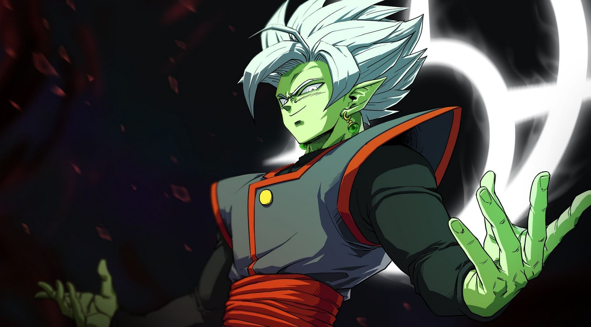

Zamas (ザマス, Zamasu) fue el Kaio del Norte del Universo 10, que debido a su potencial fue puesto como aprendiz de Kaio-shin bajo la tutela de Gowas. Fué el Kaio del Norte del Universo 10, que debido a su potencial fue puesto como aprendiz de Kaio-shin bajo la tutela de Gowas.
La saga de Zamasu en Dragon Ball Super es una emocionante y compleja historia que involucra a dos personajes principales: Zamasu y Goku Black. Todo comienza cuando Goku y sus amigos descubren la existencia de Zamasu, un dios obsesionado con la idea de exterminar a los mortales del universo.
Zamasu hace un pacto con su versión futura, quien ha obtenido el cuerpo de Goku gracias a las esferas del dragón. La fusión entre ambos Zamasu da lugar a Fusion Zamasu, un ser todopoderoso y despiadado que busca erradicar toda forma de vida no divina.
Paralelamente, Goku Black, una versión maligna y alterada de Goku en el cuerpo de Zamasu, es enviado desde el futuro para llevar a cabo el plan de exterminio. Utilizando las habilidades y poderes de Goku, Goku Black siembra el caos y se convierte en un enemigo formidable para nuestros héroes.Goku y sus amigos luchan valientemente contra Fusion Zamasu y Goku Black, pero sus poderes parecen insuficientes. Aparece Trunks del futuro, quien viajó al pasado para pedir ayuda. Juntos, enfrentan grandes desafíos y batallas épicas.

Finalmente, Goku logra reunir las energías de sus amigos para crear la "Genkidama Espiritual" y derrotar a Fusion Zamasu. Sin embargo, los deseos egoístas de Zamasu habían creado una fisura en el tiempo y el espacio, amenazando con destruir todo.
Es entonces cuando Zeno-sama, el rey de todos los universos, interviene para poner fin a la amenaza de Zamasu. La saga culmina con un enfrentamiento decisivo y el destino de los universos en juego.
En resumen, la saga de Zamasu y Goku Black en Dragon Ball Super es una emocionante aventura llena de acción, momentos dramáticos y giros sorprendentes. Los personajes se enfrentan a enemigos poderosos y deben unir sus fuerzas para salvar el universo de la destrucción total.
Acá les dejo un hermoso homenaje a éstos personajes de DBS, hecho y desarrolado por el Youtuber TheBreak.